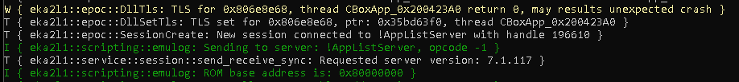
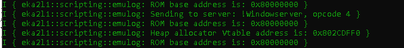

Process operations¶
Like most of other OS, Symbian has definition of process, and each process has its own memory space.
EKA2L1 exposes some functions to let you play with process:
Memory space modification
EKA2L1 provides 2 methods in the symemu.Process class for process memory space modification:
symemu.Process.readProcessMemory(): read the memory space, returns a string contains binary data.
symemu.Process.writeProcessMemory(): write to the memory space, given a string contains binary data.
While I support you in playing with reading the process memory, I don’t encourage you to play with writing. It can be dangerous, unless you know what you are doing.
Here, I will only talk about how to read. Let’s start with a reschedule hook, just so we can see the result sooner.
@symemu2.events.emulatorRescheduleInvoke
def simpleMemoryHook():
pass
In this example, what are we doing is to get the base address of the ROM. ROM memory is always available, in each process’s memory space. In EKA2, the address of the ROM is 0x80000000, starts with the header. We are gonna read the ROM base address, which is at offset 0x8C in the header.
So we should read 4 bytes from 0x8000008C, since the address is 4 bytes long (32-bit).
pr = symemu.getCurrentProcess()
if pr != None:
dat = pr.readProcessMemory(0x8000008C, 4)
We are getting the current process, and read from its memory space. The return data is a binary string, which we should use struct.unpack to unpacks data to integer.
(val, ) = struct.unpack('<I', dat)
symemu.emulog('ROM base address is: 0x{:X}'.format(val))
Finally, the complete code is here!
@symemu2.events.emulatorRescheduleInvoke
def simpleMemoryHook():
pr = symemu.getCurrentProcess()
if pr != None:
dat = pr.readProcessMemory(0x8000008C, 4)
(val, ) = struct.unpack('<I', dat)
symemu.emulog('ROM base address is: 0x{:X}'.format(val))
If you run EKA2L1, you will see the result that we all expected:
Let’s a thing that seems more ‘real’. We are going to read an address, in a region that is unique to each process. That region is the local data region, from 0x400000 to 0x40000000.
The heap of any thread in a process is in the local data region, so we are going to read a 4-bytes integer in it. The most meaningful thing that we can easily read in the heap is the VTable address of the heap allocator. The heap allocator always locates at the beginning of the chunk, and the vtable always located at the beginning of a class layout.
Append this to our current hook
thr = symemu.getCurrentThread()
if thr != None:
stb = thr.getHeapBase()
dat = pr.readProcessMemory(stb, 4)
(val, ) = struct.unpack('<I', dat)
symemu.emulog('Heap allocator Vtable address is: 0x{:X}'.format(val))
And you should get this:
The VTable address is an export in the library euser, which is in ROM, which explains why the VTable address is in ROM memory region.